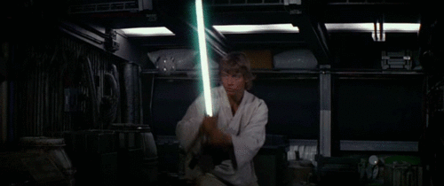

Debugging a Node.js process
Node.js process acting funny, need to debug it.
Start the node process with either --inspect or --inspect-brk
and then open
chrome://inspect in Chrome.
Why not the debugger in my IDE?
Fuzzy find
It takes so long to find the specific file I want to fiddle
with in the sources tab.
crtl-p, type the filename (or portion thereof).
DOM breakpoints
UI is changing but I have no idea where from.
Right click the element, or parent of the element that is
being modified, in the
elements inspect tab of CDT and add dom breakpoints
Call stack will almost always have jquery at the very top, but
further down should be your
culprit.
inspect element
Can't set dom breakpoints on jQuery things
Unwrap the dom element from jquery with $.get()
save to global
I need to fiddle with this value of this large object and I
don't want to have to type
all the pathing out
Right click, save to global!
I need to compare these two values from different times the
same breakpoint has been
hit
Right click, save to global!
conditional breakpoints
I need to break at this specific point, but this is a hot
path and gets hit a zillion
times. I only care about one specific call!
Right click the breakpoint, click edit, add a condition. When
that condition evaluates
truthy, the breakpoint will pause the debugger.
request breakpoints
I need to fiddle with a specific request
Set an XHR/Fetch breakpoint. In sources, on the right, scroll
down to XHR/Request
breakpoints.
block requests
I need to see how the application behaves if this specific
request fails
Block the request via the network tab. Find the request,
right click, "block request url"
This will block the request URL between reloads, so the block
must be removed at some point. If a
request is blocked, a "request blocking" tab will show up next to the embedded console.
source maps and edit in place
Trying small changes requires a long build, reload, and
navigate cycle. I want to check my small changes quickly.
Turn off source maps by going to settings in CDT, under
sources, uncheck "source maps". Now, open the file you want to modify in the sources tab of CDT.
Make your changes, and save. The next time Chrmtme executes that path, it will use your modified
code.
| Source maps on |
 |
| Source maps off |
 |
Chrome DevTools chokes and dies if you do this with an absurdly
large file. Think bundled code (sometimes refered to as "minified" around here).
loading modules in the console
I want to kick around this specific module and see how it
behaves.
Load the module in the console with require and use store as
global, `require(['path/to/the/module'], console.log);`
console.trace and events
This event handler (or function, or method) gets invoked but
I have no idea where from
Put a console.trace call at the top of the method. Chrome
will spit out a stack trace in the console. Alternatively setting a breakpoint and looking at the
call stack will accomplish the same thing, however only one at a time and it can be more difficult
to compare differing stack traces.
I want to see what events this Backbone/Marionette thing
emits when I do stuff with it.
theThing.on('all', console.trace), will spit out the event
name, any values passed along with it, and a stack trace to give an example of what caused that
event
styling on the fly
It takes so long to wait for builds/reload/navigation/etc
just to fiddle with styling
Add rules to styles tab in the elements tab by clicking the
little plus icon. Just like
writing vanilla CSS, you put in the selector and then the values.
It is possible to style individual elements and therefore you
will not have to define a selector. While this is good to nailing down desired values, it hides the
complexity involved in ensuring a selector would actually apply to the element. It is worth it,
after desired values are identified, to take a second and write a rule that will be applied.
computed styles
I have no idea why this element has this specific value for
this specific css property
Hover over the style in the computed style tab on the right
of the elements window. It will
tell you the specific rule that set the value. You can then move over to the rules tab and disable
that given rule and see what it reverts to etc
identifying memory leaks
This application becomes slow over time (or even just dies).
Use the memory tools to check for memory leaks. Not going to
go into detail here, this is a topic unto itself, just be aware that it exists.